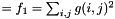
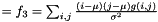
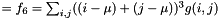
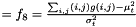
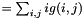
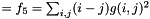
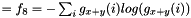
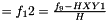
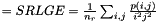
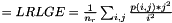

OTB wrapper for Haralick's simple, advanced and higher order texture features.
Source:R/rs_textures.R, R/funs_otb_textures.R
otbtex_hara.RdOTB wrapper for calculating Haralick's simple, advanced and higher order texture features on every pixel in each channel of the input image
OTB wrapper for calculating Haralick's simple, advanced and higher order texture features on every pixel in each channel of the input image
otbtex_hara(
x,
texture = "all",
output_name = "hara",
path_output = NULL,
return_raster = FALSE,
parameters.xyrad = list(c(1, 1)),
parameters.xyoff = list(c(1, 1)),
parameters.minmax = c(0, 255),
parameters.nbbin = 8,
channel = NULL,
verbose = FALSE,
otbLinks = NULL,
gdalLinks = NULL,
ram = "8192"
)
otbtex_hara(
x,
texture = "all",
output_name = "hara",
path_output = NULL,
return_raster = FALSE,
parameters.xyrad = list(c(1, 1)),
parameters.xyoff = list(c(1, 1)),
parameters.minmax = c(0, 255),
parameters.nbbin = 8,
channel = NULL,
verbose = FALSE,
otbLinks = NULL,
gdalLinks = NULL,
ram = "8192"
)Arguments
- x
A
Raster*object or a GeoTiff containing one or more gray value bands- texture
type of filter "all" for all, alternative one of "simple" "advanced" "higher"
- output_name
string pattern for individual naming of the output file(s)
- path_output
path for output
- return_raster
Boolean if TRUE a raster stack is returned
- parameters.xyrad
list with the x and y radius in pixel indicating the kernel sizes for which the textures are calculated
- parameters.xyoff
vector containing the directional offsets. Valid combinations are: list(c(1,1),c(1,0),c(0,1),c(1,-1))
- parameters.minmax
minimum/maximum gray value which can occur.
- parameters.nbbin
number of gray level bins (classes)
- channel
sequence of bands to be processed
- verbose
switch for system messages default is FALSE
- otbLinks
list. of OTB tools cli pathes
- gdalLinks
list. GDAL tools cli paths
- ram
reserved memory in MB
Value
raster* object
raster* object
Details
More information at: texture tutorial
Keep in mind that:
Homogeneity is correlated with Contrast, r = -0.80
Homogeneity is correlated with Dissimilarity, r = -0.95
GLCM Variance is correlated with Contrast, r= 0.89
GLCM Variance is correlated with Dissimilarity, r= 0.91
GLCM Variance is correlated with Homogeneity, r= -0.83
Entropy is correlated with ASM, r= -0.87
GLCM Mean and Correlation are more independent. For the same image, GLCM Mean shows r< 0.1 with any of the other texture measures demonstrated in this tutorial. GLCM Correlation shows r<0.5 with any other measure.
for a review of a lot of feature extraction algorithms look at: Williams et al, 2012, J. of Electronic Imaging, 21(2), 023016 (2012)
glcm <-> haralick "mean" <-> "advanced 1", "variance" <-> "advanced 2", "homogeneity" <-> "simple 4", "contrast"<-> "simple 5", "dissimilarity" <-> "advanced 2", "entropy" <-> "simple 2", "second_moment"<-> "simple 4", "correlation" <-> "simple 3"
Furthermore using stats will cover mean and variance while dissimilarity is highly correlated to homogeneity data.
More information at: texture tutorial
Keep in mind that:
Homogeneity is correlated with Contrast, r = -0.80
Homogeneity is correlated with Dissimilarity, r = -0.95
GLCM Variance is correlated with Contrast, r= 0.89
GLCM Variance is correlated with Dissimilarity, r= 0.91
GLCM Variance is correlated with Homogeneity, r= -0.83
Entropy is correlated with ASM, r= -0.87
GLCM Mean and Correlation are more independent. For the same image, GLCM Mean shows r< 0.1 with any of the other texture measures demonstrated in this tutorial. GLCM Correlation shows r<0.5 with any other measure.
for a review of a lot of feature extraction algorithms look at: Williams et al, 2012, J. of Electronic Imaging, 21(2), 023016 (2012)
glcm <-> haralick "mean" <-> "advanced 1", "variance" <-> "advanced 2", "homogeneity" <-> "simple 4", "contrast"<-> "simple 5", "dissimilarity" <-> "advanced 2", "entropy" <-> "simple 2", "second_moment"<-> "simple 4", "correlation" <-> "simple 3"
Furthermore using stats will cover mean and variance while dissimilarity is highly correlated to homogeneity data.
References
Haralick, R.M., K. Shanmugam and I. Dinstein. 1973. Textural Features for Image Classification.
IEEE Transactions on Systems, Man and Cybernetics. SMC-3(6):610-620.
Orfeo Toolbox Sofware Guide, 2016
"simple":
computes the following 8 local Haralick textures features: Energy, Entropy, Correlation, Inverse Difference Moment, Inertia, Cluster Shade, Cluster Prominence and Haralick Correlation. They are provided in this exact order in the output image. Thus, this application computes the following Haralick textures over a neighborhood with user defined radius.
To improve the speed of computation, a variant of Grey Level Co-occurrence Matrix(GLCM) called Grey Level Co-occurrence Indexed List (GLCIL) is used. Given below is the mathematical explanation on the computation of each textures. Here g( i,j) is the frequency of element in the GLCIL whose index is i,j. GLCIL stores a pair of frequency of two pixels from the given offset and the cell index (i,j) of the pixel in the neighborhood window. Where each element in GLCIL is a pair of pixel index and it's frequency, g(i,j) is the frequency value of the pair having index is i,j.
Energy 
Entropy
Correlation 
Inertia (contrast) 
Cluster Shade 
Cluster Prominence 
Haralick's Correlation 
"advanced":
computes the following 10 texture features: Mean, Variance, Dissimilarity, Sum Average, Sum Variance, Sum Entropy, Difference of Entropies, Difference of Variances, IC1 and IC2. They are provided in this exact order in the output image. The textures are computed over a sliding window with user defined radius. To improve the speed of computation, a variant of Grey Level Co-occurrence Matrix(GLCM) called Grey Level Co-occurrence Indexed List (GLCIL) is used. Given below is the mathematical explanation on the computation of each textures. Here g( i,j) is the frequency of element in the GLCIL whose index is i,j. GLCIL stores a pair of frequency of two pixels from the given offset and the cell index ( i,j) of the pixel in the neighborhood window. (where each element in GLCIL is a pair of pixel index and it's frequency, g( i,j) is the frequency value of the pair having index is i,j.
Mean 
Sum of squares: Variance 
Dissimilarity 
Sum average 
Sum Variance 
Sum Entropy 
Difference variance 
Difference entropy 
Information Measures of Correlation IC1 
Information Measures of Correlation IC2 
"higher":
computes 11 local higher order statistics textures coefficients based on the grey level run-length matrix.
It computes the following Haralick textures over a sliding window with user defined radius: (where p( i,j) is the element in cell i,j of a normalized Run Length Matrix (n_r) is the total number of runs and n_p is the total number of pixels ):
Short Run Emphasis 
Long Run Emphasis 
Grey-Level Nonuniformity 
Run Length Nonuniformity 
Low Grey-Level Run Emphasis 
High Grey-Level Run Emphasis 
Short Run Low Grey-Level Emphasis 
Short Run High Grey-Level Emphasis 
Long Run Low Grey-Level Emphasis 
Long Run High Grey-Level Emphasis 
Haralick, R.M., K. Shanmugam and I. Dinstein. 1973. Textural Features for Image Classification.
IEEE Transactions on Systems, Man and Cybernetics. SMC-3(6):610-620.
Orfeo Toolbox Sofware Guide, 2016
"simple":
computes the following 8 local Haralick textures features: Energy, Entropy, Correlation, Inverse Difference Moment, Inertia, Cluster Shade, Cluster Prominence and Haralick Correlation. They are provided in this exact order in the output image. Thus, this application computes the following Haralick textures over a neighborhood with user defined radius.
To improve the speed of computation, a variant of Grey Level Co-occurrence Matrix(GLCM) called Grey Level Co-occurrence Indexed List (GLCIL) is used. Given below is the mathematical explanation on the computation of each textures. Here g( i,j) is the frequency of element in the GLCIL whose index is i,j. GLCIL stores a pair of frequency of two pixels from the given offset and the cell index (i,j) of the pixel in the neighborhood window. Where each element in GLCIL is a pair of pixel index and it's frequency, g(i,j) is the frequency value of the pair having index is i,j.
Energy
Entropy
Correlation
Inertia (contrast)
Cluster Shade
Cluster Prominence
Haralick's Correlation
"advanced":
computes the following 10 texture features: Mean, Variance, Dissimilarity, Sum Average, Sum Variance, Sum Entropy, Difference of Entropies, Difference of Variances, IC1 and IC2. They are provided in this exact order in the output image. The textures are computed over a sliding window with user defined radius. To improve the speed of computation, a variant of Grey Level Co-occurrence Matrix(GLCM) called Grey Level Co-occurrence Indexed List (GLCIL) is used. Given below is the mathematical explanation on the computation of each textures. Here g( i,j) is the frequency of element in the GLCIL whose index is i,j. GLCIL stores a pair of frequency of two pixels from the given offset and the cell index ( i,j) of the pixel in the neighborhood window. (where each element in GLCIL is a pair of pixel index and it's frequency, g( i,j) is the frequency value of the pair having index is i,j.
Mean
Sum of squares: Variance
Dissimilarity
Sum average
Sum Variance
Sum Entropy
Difference variance
Difference entropy
Information Measures of Correlation IC1
Information Measures of Correlation IC2
"higher":
computes 11 local higher order statistics textures coefficients based on the grey level run-length matrix.
It computes the following Haralick textures over a sliding window with user defined radius: (where p( i,j) is the element in cell i,j of a normalized Run Length Matrix (n_r) is the total number of runs and n_p is the total number of pixels ):
Short Run Emphasis
Long Run Emphasis
Grey-Level Nonuniformity
Run Length Nonuniformity
Low Grey-Level Run Emphasis
High Grey-Level Run Emphasis
Short Run Low Grey-Level Emphasis
Short Run High Grey-Level Emphasis
Long Run Low Grey-Level Emphasis
Long Run High Grey-Level Emphasis
Examples
if (FALSE) {
# load libraries
require(uavRst)
require(link2GI)
require(listviewer)
setwd(tempdir())
# check if OTB exists
otbLinks <- link2GI::linkOTB()
if (otbLinks$exist) {
data("rgb")
raster::plotRGB(rgb)
fn<-file.path(tempdir(),"rgb.tif")
raster::writeRaster(rgb,
filename=fn,
format="GTiff",
overwrite=TRUE)
# get help
cmd<-link2GI::parseOTBFunction(algo = "HaralickTextureExtraction",gili=otbLinks)
listviewer::jsonedit(cmd$help)
# calculate simple Haralick-textures for 3 red, green and blue channel
r <- otbtex_hara(x=file.path(tempdir(),"rgb.tif"),
texture = "simple",
return_raster = TRUE,
otbLinks = otbLinks)
# visualize all layers
raster::plot(r)
}
}
if (FALSE) {
# load libraries
require(link2GI)
require(listviewer)
setwd(tempdir())
# check if OTB exists
otbLinks <- link2GI::linkOTB()
if (otbLinks$exist) {
data("rgb")
raster::plotRGB(rgb)
fn<-file.path(tempdir(),"rgb.tif")
raster::writeRaster(rgb,
filename=fn,
format="GTiff",
overwrite=TRUE)
# get help
cmd<-link2GI::parseOTBFunction(algo = "HaralickTextureExtraction",gili=otbLinks)
listviewer::jsonedit(cmd$help)
# calculate simple Haralick-textures for 3 red, green and blue channel
r <- otbtex_hara(x=file.path(tempdir(),"rgb.tif"),
texture = "simple",
return_raster = TRUE,
otbLinks = otbLinks)
# visualize all layers
raster::plot(r)
}
}